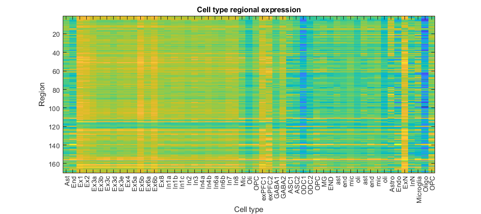
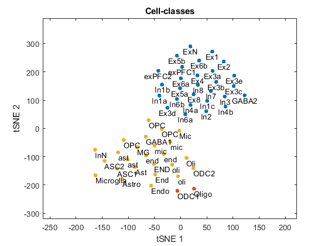

Cell-class regional expression
Contents
Dependencies:
1. Table with regional expression values for genes of interest (data/hippocampus_gxp_clean.csv). 2. Table with genes associated with each cell (data/cell_type_gene_lists_clean.csv).
gene_exp_filepath = 'C:\Users\jonah\Documents\MAGeT\gene_exp\hippocampus_gxp_clean.csv'; cell_genes_filepath = 'C:\Users\jonah\Documents\MAGeT\gene_exp\cell_type_gene_lists_clean.csv';
Clean data
cell_genes = readtable(cell_genes_filepath); gene_exp = readtable(gene_exp_filepath); % Remove cell-types 30,45,50 as in Seidlitz et al., 2018 (two without inhibitory/excitatory classification; one with no similar cell-types ('per')). cell_genes([30,45,50],:) = []; gene_exp_num = table2array(gene_exp(:,2:end)); gene_exp.Properties.VariableNames{1} = 'GeneID'; gene_ids = gene_exp.GeneID;
Calculate the region by cell-type expression matrix
% Define variables. n_cells = height(cell_genes); n_regions = width(gene_exp_num); % Initialize matrix. region_cell_exp = zeros(n_regions,n_cells); for n_cell = 1:n_cells % Pull cell-type gene set. gene_set = table2cell(cell_genes(n_cell,4:end)); gene_set = unique(gene_set)'; % For each region, calculate median expression in gene set. idx = ismember(gene_ids,gene_set); region_cell_exp(:,n_cell) = median(gene_exp_num(idx,:)); end % Plot region by cell matrix figure('Position',[464 407 943 420]); imagesc(region_cell_exp); set(gca,'XTick',1:height(cell_genes), 'XTickLabel',cell_genes.Type) ylabel('Region') xlabel('Cell type') title('Cell type regional expression')
Cluster cell-types into cell-classes using k-means
% Set seed for reproducibilty. rng(1) % Determine optimal number of clusters through k-means/silhouette coefficient. eval = evalclusters(region_cell_exp','kmeans','Silhouette','KList',1:20); opt_k = eval.OptimalK; idx = kmeans(region_cell_exp',opt_k); % Plot tSNE scores with class labels for optimal k. tsne_scores = tsne(region_cell_exp'); text_size = 15; figure;plot(tsne_scores(idx == 1,1),tsne_scores(idx == 1,2),'.','MarkerSize',text_size) text(tsne_scores(idx == 1,1),tsne_scores(idx == 1,2),cell_genes.Type(idx == 1),'VerticalAlignment','top','HorizontalAlignment','center'); for n_k = 2:opt_k hold on;plot(tsne_scores(idx == n_k,1),tsne_scores(idx == n_k,2),'.','MarkerSize',text_size) text(tsne_scores(idx == n_k,1),tsne_scores(idx == n_k,2),cell_genes.Type(idx == n_k),'VerticalAlignment','top','HorizontalAlignment','left'); end xlim([(min(tsne_scores(:,1)) - 100),(max(tsne_scores(:,1)) + 100)]) ylim([(min(tsne_scores(:,2)) - 100),(max(tsne_scores(:,2)) + 100)]) xlabel('tSNE 1') ylabel('tSNE 2') title('Cell-classes')
Calculate the region by cell-class expression matrix
The regional expression of a given cell-class is a weighted average across cell-types, where each cell-type is weighted by how similar it is to its class. This similarity is calculated by taking the euclidean distance between each cell-type's regional expression vector and the 1st principal component of the cell-class regional expression matrix.
% Define Euclidean distance metric. dist = @(p1,p2) sqrt(sum((p1 - p2) .^ 2)); % Initialize matrix to track weighted-average expressions of cell-classes. w_cell_class_exp = zeros(n_regions,opt_k); for class = 1:opt_k % Define cells within current class. class_cells = find(idx == class); % Run PCA on cell-class regional-expression matrix. pca_w = pca(region_cell_exp(:,class_cells)'); % Calculate Euclidean distance between expression of a cell-type and 'class centroid' (1st PCA component). weights = zeros(length(class_cells),1); for n_cell = 1:length(class_cells) weights(n_cell) = dist(pca_w(:,1),region_cell_exp(:,class_cells(n_cell))); end % Calculate weighted-average expression of a cell-class. w_cell_class_exp(:,class) = sum(region_cell_exp(:,class_cells).*weights',2); end % Plot figure; fig = imagesc(w_cell_class_exp); set(gca,'XTick',1:opt_k, 'XTickLabel',num2cell(1:opt_k)) ylabel('Region') xlabel('Cell class') title('Cell class regional expression')